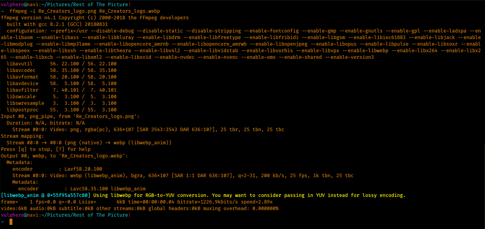

FFmpeg is a multiplatform, open-source library to record, convert and stream video and audio files. Created in 2000, it is a powerful command-line tool that runs on Linux, Windows and Mac operating systems. FFmpeg is currently used by many websites and programs, including YouTube and VLC Media Player, and is published under the GNU Lesser General Public License 2.1+.
- Get File Information From a Video File
- Convert Images To a Video Sequence
- Convert a Video to X Images
- Crop a Video File
- Resize a Video
- Extract a Portion of a Video
- Encode a Video Sequence for the iPod/iPhone
- Encode a Video for Sony PSP
- Extract Sound From a Video, And Save It in Mp3 Format
- Convert a Wav File to Mp3
- Convert .avi Video to .mpg
- Convert .mpg to .avi
- Convert .avi to .flv
- Convert .avi to .dv
- Convert .avi to mpeg for DVD Players
- Compress .avi video
- Compress Ogg Theora to mpeg DVD
- Compress .avi to SVCD mpeg2
- Compress .avi to VCD mpeg2
- Convert .avi to Animated Gif (Uncompressed)
- Mix a Video With a Sound File
- Add Text Subtitles to a Video
- Image Overlay on a Video
- Frequently Asked Questions
The program and its source code can be downloaded here. Please refer to the official documentation if you need any help to install FFmpeg.
The commands contained in this guide describes how to perform various tasks as such as video files conversion, audio file sound extraction, encoding files for iPod or PSP, converting a video to a gif file, and more.
Get File Information From a Video File
You can easily obtain a lot of information on a given video file with the following command line instruction:
ffmpeg -i video.avi
Convert Images To a Video Sequence
This command will transform all the images from the current directory (named image1.jpg, image2.jpg, etc…) to a video file named video.mpg.
ffmpeg -f image2 -i image%d.jpg video.mpg
Convert a Video to X Images
This command will generate imagess named image1.jpg, image2.jpg, etc, from a given video file. The following image formats are available: PGM, PPM, PAM, PGMYUV, JPEG, GIF, PNG, TIFF, SGI.
ffmpeg -i video.mpg image%d.jpg
Crop a Video File
Cropping is a very common operation in video editing. FFmpeg provides a crop filter for this specific purpose:
ffmpeg -i input.mp4 -filter:v "crop=out_w:out_h:x:y" output.mp4
The options are as follows:
out_wis the width of the output rectangleout_his the height of the output rectanglexandyspecify the top left corner of the output rectangleoutput.mp4is the output file
Resize a Video
Using the -vf scale filter, it is possible to resize videos to a desired size:
ffmpeg -i input.avi -vf scale=320:240 output.avi
The same works with images as well:
ffmpeg -i input.jpg -vf scale=320:240 output_320x240.png
Extract a Portion of a Video
Another very common operation on video files is to extract a specific portion of a given video. This can be done super easily:
ffmpeg -ss 00:00:30 -i orginalfile.mpg -t 00:00:05 -vcodec copy -acodec copy newfile.mpg
In the example above, we are cutting out a part starting at 00:00:30 into the original file with a 5 seconds length. -ss indicates the starting time, and -t indicates the duration.
Encode a Video Sequence for the iPod/iPhone
You can easily convert a video for iPhones and older iPods using this command:
ffmpeg -i source_video.avi input -acodec aac -ab 128kb -vcodec mpeg4 -b 1200kb -mbd 2 -flags +4mv+trell -aic 2 -cmp 2 -subcmp 2 -s 320x180 -title X final_video.mp4
Explanations :
- Source : source_video.avi
- Audio codec : aac
- Audio bitrate : 128kb/s
- Video codec : mpeg4
- Video bitrate : 1200kb/s
- Video size : 320px par 180px
- Generated video : final_video.mp4
Encode a Video for Sony PSP
Same goes with Sony PSP: The command line below takes a source video file and creates an output file compatible with Sony PSP.
ffmpeg -i source_video.avi -b 300 -s 320x240 -vcodec xvid -ab 32 -ar 24000 -acodec aac final_video.mp4
Explanations :
- Source : source_video.avi
- Audio codec : aac
- Audio bitrate : 32kb/s
- Video codec : xvid
- Video bitrate : 1200kb/s
- Video size : 320px par 180px
- Generated video : final_video.mp4
Extract Sound From a Video, And Save It in Mp3 Format
Creating an audio file from a video is an easy task:
ffmpeg -i source_video.avi -vn -ar 44100 -ac 2 -ab 192k -f mp3 sound.mp3
Explanations :
- Source video : source_video.avi
- Audio bitrate : 192kb/s
- output: mp3 format
- Generated sound : sound.mp3
Convert a Wav File to Mp3
FFmpeg isn’t only for videos, there’s a lot you can do with audio files as well. This example will convert a .wav file to mp3 format.
ffmpeg -i input_sound.avi -vn -ar 44100 -ac 2 -ab 192k -f mp3 output_sound.mp3
Convert .avi Video to .mpg
Coverting video files from a format to another is extremely simple. Here, a .avi video is converted to .mpg:
ffmpeg -i original_video.avi final_video.mpg
Convert .mpg to .avi
And vice-versa. This command convert videos to a specified file format:
ffmpeg -i original_video.mpg final_video.avi
Convert .avi to .flv
.flv is a very popular format for web videos. This example converts a .avi file into .flv, while specifying various parameters as such as the display size.
ffmpeg -i original_video.avi -ab 56 -ar 44100 -b 200 -r 15 -s 320x240 -f flv final_video.flv
Convert .avi to .dv
Another audio/video format conversion. This command will convert a .avi file to .dv:
ffmpeg -i original_video.avi -s pal -r pal -aspect 4:3 -ar 48000 -ac 2 final_video.dv
This can be used as well:
ffmpeg -i original_video.avi -target pal-dv final_video.dv
Convert .avi to mpeg for DVD Players
If you have a video you’d like to watch on a DVD player, here is how to properly encode it:
ffmpeg -i source_video.avi -target pal-dvd -ps 2000000000 -aspect 16:9 final_video.mpeg
Explanations :
target pal-dvd: Output format-ps 2000000000: Maximum size for the output file, in bits (here, 2 Gb)-aspect 16:9: Widescreen
Compress .avi video
You can compress videos in order to save space on your hard drive. Note the use of the -s parameter to resize the output file:
ffmpeg -i original_video.avi -s 320x240 -vcodec msmpeg4v2 final_video.avi
Compress Ogg Theora to mpeg DVD
More unusual formats, as such as Ogg Theora, can also be converted. Note the use of -vcodec and -acodec to specify the video and ausio codecs to be used:
ffmpeg -i input.ogm -s 720x576 -vcodec mpeg2video -acodec mp3 output.mpg
Compress .avi to SVCD mpeg2
mpeg-2 is the standard format for SVCD and CVD (which you can burn on CDR media and playback on a TV with a SVCD-CVD compatible DVD player) and DVD.
Depending of your player format, you have to use a different command. In the US, NTSC is the standard:
ffmpeg -i original_video.avi -target ntsc-svcd final_video.mpg
If your player is in PAL format, you should use the following instead:
ffmpeg -i original_video.avi -target pal-svcd final_video.mpg
Compress .avi to VCD mpeg2
Video CDs are a quick and cheap way to watch a video from your computer on your TV. Converting a video file to VCD is very easy.
The command to use depends on your player format. Let’s start with NTSC, the standard in North America:
ffmpeg -i original_video.avi -target ntsc-vcd final_video.mpg
The following is for PAL players, used mainly in Europe:
ffmpeg -i original_video.avi -target pal-vcd final_video.mpg
Convert .avi to Animated Gif (Uncompressed)
You can easily create an animated gif from a video file:
ffmpeg -i original_video.avi animated_gif.gif
Mix a Video With a Sound File
If you have an audio and video file, you can mix them together:
ffmpeg -i sound.wav -i original_video.avi final_video.mpg
Add Text Subtitles to a Video
If you have subtitles for a movie or documentary, it is possible to use FFmpeg to insert them into your video file:
ffmpeg -i input.mp4 -i subtitles.srt -c copy -c:s mov_text output.mp4
Image Overlay on a Video
Let’s finish this round-up with an advanced command. Here we are applying an overlay image to an existing video:
ffmpeg -i input.mp4 -i image.png -filter_complex "[0:v][1:v] overlay=25:25:enable='between(t,0,20)'" -pix_fmt yuv420p -c:a copy output.mp4
Some explanations:
overlay=25:25: The image will be positioned 25px to the right and 25px down, originating from the top left corner (0:0).enable='between(t,0,20)': The overlay image will be shown from 00:00:00 to 00:00:20
Frequently Asked Questions

What Can FFmpeg Do?
As you can see from the examples above, a lot of things. FFmpeg is definitely a handy tool to manipulate audio and video files.
What Does FFmpeg Mean?
FFmpeg stands for Fast Forward mpeg.
Which Web Hosting Plans are recommended for FFmpeg?
Any plan with a SSH access will let you install FFmpeg on your hosting server. We recommend Digital Ocean and HostGator Cloud. More info can be found in our in-depth web hosting reviews.
This article is an English adaptation of Jean Cartier ffmpeg exemples.